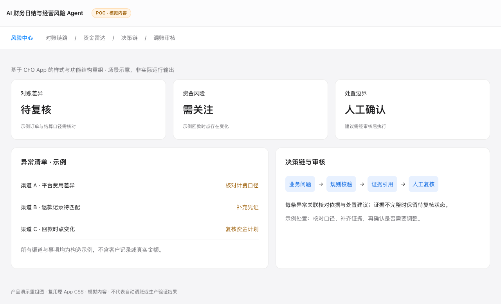

现金流预测
基于销售预测与收付时点映射，呈现经营现金压力与预测区间。
ANONYMISED CASE / POC VALIDATION
跨境电商 · 财务与经营
面向 CFO、资金与财务团队的分析型决策助手：围绕现金流、利润和风险情景，提供可追溯的洞察与建议。
01 / BUSINESS CHALLENGE
平台结算、采购、费用、汇率与库存数据分散；财务团队需要不断在现金、利润和风险之间切换视角，人工汇总难以支持及时的压力测试与归因分析。
该案例不尝试替代财务人员，也不把对话模型变成金额计算器，而是将已核定的事实、规则和模型组织成受控分析闭环。
02 / KEY DECISIONS
03 / PRODUCT APPROACH
基于销售预测与收付时点映射，呈现经营现金压力与预测区间。
以受控因子驱动利润、现金与费用的情景传导，而非由模型自由推演。
从经营、资金、分部与风险角度组织分析结果，并支持向事实依据下钻。
04 / MY ROLE
05 / BOUNDARY & EVIDENCE
本页面仅展示已脱敏的设计与验证范围。它不构成对真实财务数据、客户系统、生产指标或自动化执行能力的声明。进入生产前，仍需完成真实数据对账、权限设计、评测集、人工审批、审计和灰度验证。
POC / CFO PRODUCT PREVIEW
参考桌面 CFO POC 的风险中心、决策链与审核功能，复用原 App 样式制作的演示重组图。内容为独立构造的模拟场景，非原 App 运行截图，也不代表真实财务数据或生产验证结果。
